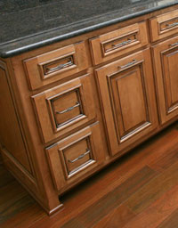
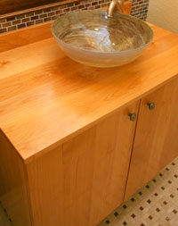

15220 Carrollton Blvd
Carrollton, VA 23314
phone 757.356.9292
fax 757.356.9299
Transitions Custom Kitchens brings new definition to the term “custom kitchens”. Our staff of talented designers, builders, finishers and installers put a personal touch on every facet of your project. From the first design consultation to the final clean -up of the installation, each project receives a quality touch that can only be described by one that has experienced it. Over the years, we have been creating a truly “custom” and affordable product that has allowed our business to thrive solely on word of mouth advertising. The beauty of our work along with our exceptional customer service leaves each customer thankful for their choice in cabinetry builder.
Our wide range of styles, finishes, colors, woods, laminates, molding, and hardware make the design process as unique to your own personality and taste as possible. With true custom design and building, your choices are virtually limitless.
Whether you are looking for more storage, more counter space, more seating, more functionality, or just a better look, our timeless craftsmanship will reflect your unique vision of a “one of a kind, dream kitchen”
We build much more than beautiful kitchens. We can transform your Family Room, Dining Room, Living Room, Office, Bedroom, Bathroom, Laundry Room, Closet, or Garage into a room in which you will love to spend your time.
We provide the same quality and craftsmanship in any room of your home as we do with your kitchen. Custom fireplace mantels, entertainment centers, closets, pantry storage units, laminated garage cabinets, the list goes on and on.
We will custom design, build and fit cabinetry into any room or corner of your home, enhancing it's style and value. Use our knowledge and expertise to help you choose that perfect blend of style and looks to reflect your personality and enhance your home.
"When we began thinking about our kitchen renovation, we did not know where to begin in regards to the design and layout. With 4 small children, we wanted an eat-in kitchen with plenty of usable storage space and a consistent operational flow with the necessary appliances. The team at Transitions not only developed the perfect design, but the finished product was more beautiful than we every imagined it could be ... and they were fast! Thanks, Transitions".
Tom and Wendy Powell, Suffolk VA
Deep walnut, with rich luster grain; Light Oak with a divine finish; Antique-Painted styles that bring back memories of the way it used to be — Transitions Kitchens has the creativity to design your new kitchen to be the most admired room in your house.
Call us today for an analysis of your living space. We’re ready to make your dreams come true.
Transitions Custom Kitchens & Countertops
15220 Carrollton Blvd
Carrollton, VA 23314
office: (757) 356-9292
fax: (757) 356-9299
info@kitchentransitions.com